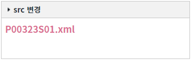
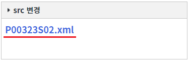
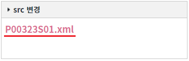

WidgetContainer의 'getWidgetById' 메소드를 사용하여 위젯 객체를 반환받아 화면의 경로를 변경하는 예제입니다. 화면의 경로는 위젯 객체의 'setSrc' 메소드를 사용하여 변경할 수 있습니다.
위젯 객체를 반환하는 주요 메소드는 다음과 같습니다.
getWidgetById: 위젯의 'id'를 받아 widget 객체를 반환
getWidgetByTitle: 위젯의 'title'을 받아 widget 객체를 반환
추가된 위젯의 화면(src) 변경하기
1
STEP 1: 초기 상태를 확인합니다.
WidgetContainer에 타이틀이 'src 변경'인 위젯이 추가되어 있습니다. 예제 테스트를 위해 위젯의 우측 상단의 기능 버튼은 모두 제거된 상태입니다.
Image 1.브라우저(Chrome) 실행 예시

2
STEP 2: 추가된 위젯의 화면을 'P00323S02.xml'로 변경하기
"위젯의 화면을 'P00323S02.xml'로 변경하기" 버튼을 클릭합니다.3
STEP 3: 실행된 결과를 확인합니다.
위젯의 화면이 'P00323S02.xml'로 변경됩니다. 위젯 콘텐츠에 문자열 'P00323S02.xml'이 표시되어있습니다.
Image 2.브라우저(Chrome) 실행 예시

4
STEP 4: 추가된 위젯의 화면을 'P00323S01.xml'로 변경하기
"위젯의 화면을 'P00323S01.xml'로 변경하기" 버튼을 클릭합니다.5
STEP 5: 실행된 결과를 확인합니다.
위젯의 화면이 'P00323S01.xml'로 변경됩니다. 위젯 콘텐츠에 문자열 'P00323S01.xml'이 표시되어있습니다.
Image 3.브라우저(Chrome) 실행 예시

WidgetContainer의 추가된 위젯 객체의 메소드 'setSrc'를 사용하여 구현할 수 있습니다. 위젯 객체를 반환하는 주요 메소드는 다음과 같습니다.
getWidgetById: [권장] 위젯의 'id'를 받아 widget 객체를 반환
getWidgetByTitle: 위젯의 'title'을 받아 widget 객체를 반환
세부 설정은 아래의 스크립트 예시에 작성되어 있습니다.
Example 1.Script
// WidgetContainer에 추가된 위젯의 ID가 'wgc_exam1'인 위젯 객체를 반환받습니다. (메소드 'addWidgets'의 첫 번째 인자의 위젯 옵션 'id'에 정의한 값) var objWidget = wgc_exam1.getWidgetById("wg_exam1"); // 위젯의 파일 경로를 "/page/P00323S02.xml"로 변경합니다. objWidget.setSrc("/page/P00323S02.xml");
Example 2.Script
// WidgetContainer의 메소드 'addWidgets' 호출 예시 wgc_exam1.addWidgets({ id: "wg_exam1", // WidgetContainer의 메소드 'getWidgetById'의 인자로 사용 src: "/page/P00323S01.xml", scope: true, unitWidth: 1, unitHeight: 5, title: "src 변경" });
getWidgetById( id )
[Widget Object].setSrc( pagePath )